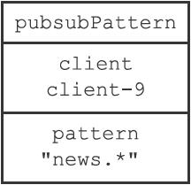
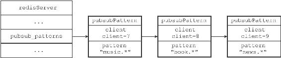
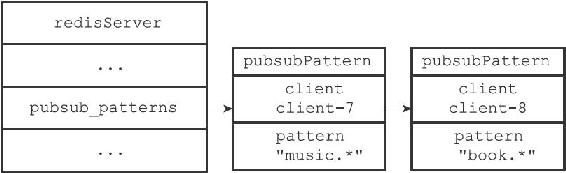
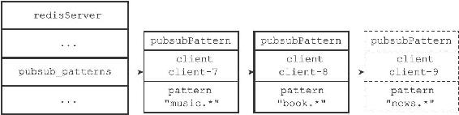
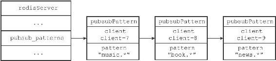
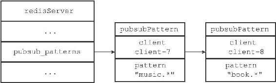

18.2 模式的订阅与退订
前面说过，服务器将所有频道的订阅关系都保存在服务器状态的pubsub_channels属性里面，与此类似，服务器也将所有模式的订阅关系都保存在服务器状态的pubsub_patterns属性里面：
struct redisServer {
// ...
//
保存所有模式订阅关系
list *pubsub_patterns;
// ...
};
pubsub_patterns属性是一个链表，链表中的每个节点都包含着一个pubsub Pattern结构，这个结构的pattern属性记录了被订阅的模式，而client属性则记录了订阅模式的客户端：
typedef struct pubsubPattern {
//
订阅模式的客户端
redisClient *client;
//
被订阅的模式
robj *pattern;
} pubsubPattern;
图18-10是一个pubsubPattern结构示例，它显示客户端client-9正在订阅模式"news.*"。

图18-10 pubsubPattern结构示例
图18-11展示了一个pubsub_patterns链表示例，这个链表记录了以下信息：
·客户端client-7正在订阅模式"music.*"。
·客户端client-8正在订阅模式"book.*"。
·客户端client-9正在订阅模式"news.*"。

图18-11 pubsub_patterns链表示例
18.2.1 订阅模式
每当客户端执行PSUBSCRIBE命令订阅某个或某些模式的时候，服务器会对每个被订阅的模式执行以下两个操作：
1）新建一个pubsubPattern结构，将结构的pattern属性设置为被订阅的模式，client属性设置为订阅模式的客户端。
2）将pubsubPattern结构添加到pubsub_patterns链表的表尾。举个例子，假设服务器中pubsub_patterns链表的当前状态如图18-12所示。

图18-12 执行PSUBSCRIBE命令之前的pubsub_patterns链表
那么当客户端client-9执行命令
PSUBSCRIBE "news.*"
之后，pubsub_patterns链表将更至新图18-13所示的状态，其中用虚线包围的是新添加的pubsubPattern结构。

图18-13 执行PSUBSCRIBE命令之后的pubsub_patterns链表
PSUBSCRIBE命令的实现原理可以用以下伪代码来描述：
def psubscribe(*all_input_patterns):
#
遍历输入的所有模式
for pattern in all_input_patterns:
#
创建新的pubsubPattern
结构
#
记录被订阅的模式，以及订阅模式的客户端
pubsubPattern = create_new_pubsubPattern()
pubsubPattern.client = client
pubsubPattern.pattern = pattern
#
将新的pubsubPattern
追加到pubsub_patterns
链表末尾
server.pubsub_patterns.append(pubsubPattern)
18.2.2 退订模式
模式的退订命令PUNSUBSCRIBE是PSUBSCRIBE命令的反操作：当一个客户端退订某个或某些模式的时候，服务器将在pubsub_patterns链表中查找并删除那些pattern属性为被退订模式，并且client属性为执行退订命令的客户端的pubsubPattern结构。
举个例子，假设服务器pubsub_patterns链表的当前状态如图18-14所示。

图18-14 执行PUNSUBSCRIBE命令之前的pubsub_patterns链表
那么当客户端client-9执行命令
PUNSUBSCRIBE "news.*"
之后，client属性为client-9，pattern属性为"news.*"的pubsubPattern结构将被删除，pubsub_patterns链表将更新至图18-15所示的样子。

图18-15 执行PUNSUBSCRIBE命令之后的pubsub_patterns链表
PUNSUBSCRIBE命令的实现原理可以用以下伪代码来描述：
def punsubscribe(*all_input_patterns):
#
遍历所有要退订的模式
for pattern in all_input_patterns:
#
遍历pubsub_patterns
链表中的所有pubsubPattern
结构
for pubsubPattern in server.pubsub_patterns:
#
如果当前客户端和pubsubPattern
记录的客户端相同
#
并且要退订的模式也和pubsubPattern
记录的模式相同
if client == pubsubPattern.client and \
pattern == pubsubPattern.pattern:
#
那么将这个pubsubPattern
从链表中删除
server.pubsub_patterns.remove(pubsubPattern)